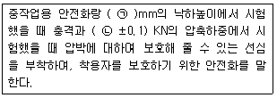
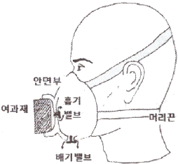
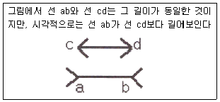
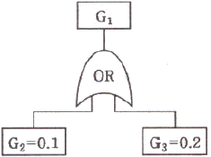
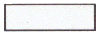
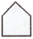
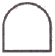
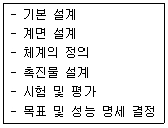

건설안전산업기사 (2018-09-15 기출문제)
1과목: 산업안전관리론
1. 산업재해의 발생형태 종류 중 상호자극에 의하여 순간적으로 재해가 발생하는 유형으로 재해가 일어난 장소나 그 시점에 일시적으로 요인이 집중하는 것은?
- 단순 자극형
- 단순 연쇄형
- 복합 연쇄형
- 복합형
(정답률: 73%)

2. 평균 근로자수가 1000명인 사업장의 도수율이 10.25이고 강도율이 7.25 이었을 때 이 사업장의 종합재해지수는?
- 7.62
- 8.62
- 9.62
- 10.62
(정답률: 60%)
3. 자신의 결함과 무능에 의하여 생긴 열등감이나 긴장을 해소시키기 위하여 장점 같은 것으로 그 결함을 보충하려는 행동의 방어기제는?
- 보상
- 승화
- 투사
- 합리화
(정답률: 56%)
4. 재해원인의 분석방법 중 사고의 유형, 기인물 등 분류항목을 큰 순서대로 도표화하는 통계적 원인분석 방법은?
- 특성 요인도
- 관리도
- 크로스도
- 파레토도
(정답률: 74%)
5. 앞에 실시한 학습의 효과는 뒤에 실시하는 새로운 학습에 직접 또는 간접으로 영향을 주는 현상을 의미하는 것은?
- 통찰(Insight)
- 전이(Transference)
- 반사(Reflex)
- 반응(Reaction)
(정답률: 85%)
6. 공정안전보고서의 안전운전계획에 포함하여야 할 세부 내용이 아닌 것은?
- 설비배치도
- 안전작업허가
- 도급업체 안전관리계획
- 설비점검ㆍ검사 및 보수계획, 유지계획 및 지침서
(정답률: 54%)
7. 인간의 의식수준 5단계 중 의식수준의 저하로 인한 피로와 단조로움의 생리적 상태가 일어나는 단계는?
- Phase Ⅰ
- Phase Ⅱ
- Phase Ⅲ
- Phase Ⅳ
(정답률: 58%)
8. 상해의 종류 중 타박, 충돌, 추락 등으로 피부 표면보다는 피하조직 등 근육부를 다친 상해를 무엇이라 하는가?
- 골절
- 자상
- 부종
- 좌상
(정답률: 77%)
9. 산업안전보건법령에 따른 근로자 안전ㆍ보건교육 중 건설업 기초안전ㆍ보건교육 과정의 건설 일용근로자의 교육시간으로 옳은 것은?
- 1시간
- 2시간
- 4시간
- 6시간
(정답률: 66%)
10. 매슬로우(Maslow)의 욕구단계 이론 중 제3단계로 옳은 것은?
- 생리적 욕구
- 안전에 대한 욕구
- 존경과 긍지에 대한 욕구
- 사회적(애정적) 욕구
(정답률: 80%)
11. 산업안전보건법령에 따른 안전검사 대상 유해ㆍ위험기계에 해당하지 않는 것은?
- 산업용 원심기
- 이동식 국소 배기장치
- 롤러기(밀폐형 구조는 제외)
- 크레인(정격 하중이 2톤 미만인 것은 제외)
(정답률: 72%)
12. 작업을 하고 있을 때 걱정거리, 고민거리, 욕구불만 등에 의해 다른데 정신을 빼앗기는 부주의 현상은?
- 의식의 중단
- 의식의 우회
- 의식의 과잉
- 의식수준의 저하
(정답률: 80%)
13. 모랄 서베이(Morale Survey)의 주요 방법 중 태도조사법에 해당하는 것은?
- 사례연구법
- 관찰법
- 실험연구법
- 면접법
(정답률: 63%)
14. 보호구 안전인증 고시에 따른 안전화 정의 중 다음 ()안에 알맞은 것은?

- ㉠ 250, ㉡ 4.4
- ㉠ 500, ㉡ 10
- ㉠ 750, ㉡ 7.4
- ㉠ 1000, ㉡ 15
(정답률: 50%)
15. 보호구 안전인증 고시에 따른 다음 방진 마스크의 형태로 옳은 것은?

- 격리식 반면형
- 직결식 반면형
- 격리식 전면형
- 직결식 전면형
(정답률: 70%)
16. 산업안전보건법령에 따른 교육대상별 교육 내용 중 근로자 정기안전ㆍ보건교육 내용이 아닌 것은? (단, 산업안전보건법 및 일반관리에 관한 사항은 제외한다.)
- 산업재해보상보험 제도에 관한 사항
- 산업조건 및 직업병 예방에 관한 사항
- 유해ㆍ위험 작업환경 관리에 관한 사항
- 작업공정의 유해ㆍ위험과 재해 예방대책에 관한 사항
(정답률: 35%)
17. 산업안전보건법령에 따른 안전ㆍ보건표지 중 금지표지의 종류가 아닌 것은?
- 금연
- 물체이동금지
- 접근금지
- 차량통행금지
(정답률: 54%)
18. 다음에서 설명하는 착시 현상과 관계가 깊은 것은?

- 헬몰쯔의 착시
- 쾰러의 착시
- 뮬러-라이어의 착시
- 포겐 도르프의 착시
(정답률: 69%)
19. OJT(On the Job Training) 교육방법에 대한 설명으로 옳은 것은?
- 교육훈련 목표에 대한 집단적 노력이 흐트러질 수 있다.
- 다수의 근로자에게 조직적 훈련이 가능하다.
- 직장의 실정에 맞게 실제적 훈련이 가능하다.
- 전문가를 강사로 초빙 가능하다.
(정답률: 74%)
20. 학습지도의 형태 중 몇 사람의 전문가에 의하여 과제에 관한 견해가 발표된 뒤 참가자로 하여금 의견이나 질문을 하게 하여 토의하는 방법은?
- 패널 디스커션(panel discussion)
- 심포지엄(symposium)
- 포럼(forum)
- 버즈 세션(buzz session)
(정답률: 60%)
2과목: 인간공학 및 시스템안전공학
21. 설계 강도 이상의 급격한 스트레스에 의해 발생하는 고장에 해당하는 것은?
- 초기고장
- 우발고장
- 마모고장
- 열화고장
(정답률: 58%)
22. 다음 FT에서 G1의 발생확률은?

- 0.02
- 0.28
- 0.98
- 0.72
(정답률: 54%)
23. 어떤 상황에서 정보 전송에 따른 표시장치를 선택하거나 설계할 때, 청각장치를 주로 사용하는 사례로 맞는 것은?
- 메시지가 길고 복잡한 경우
- 메시지를 나중에 재참조하여야 할 경우
- 메시지가 즉각적인 행동을 요구하는 경우
- 신호의 수용자가 한 곳에 머무르고 있는 경우
(정답률: 78%)
24. FT도 작성에 사용되는 기호에서 그 성격이 다른 하나는?



(정답률: 62%)
25. 중추신경계의 피로 즉, 정신피로의 척도로 사용되는 것으로서 점멸률을 점차 증가(감소)시키면서 피실험자가 불빛이 계속 켜져 있는 것으로 느끼는 주파수를 측정하는 방법은?
- VFF
- EMG
- EEG
- MTM
(정답률: 56%)
26. 거리가 있는 한 물체에 대한 약간 다른 상이 두 눈의 망막에 맺힐 때, 이것을 구별할 수 있는 능력은?
- vernier acuity
- stereoscopic acuity
- dynamic visual acuity
- minimum percptible acuity
(정답률: 57%)
27. 조작자와 제어버튼 사이의 거리, 조작에 필요한 힘 등을 정할 때, 가장 일반적으로 적용되는 인체측정자료 응용원칙은?
- 조절식 설계원칙
- 평균치 설계원칙
- 최대치 설계원칙
- 최소치 설계원칙
(정답률: 52%)
28. 인간이 느끼는 소리의 높고 낮은 정도를 나타내는 물리량은?
- 음압
- 주파수
- 지속시간
- 명료도
(정답률: 68%)
29. 인간-기계 시스템에서 기본적인 기능에 해당하지 않는 것은?
- 감각 기능
- 정보 저장 기능
- 작업환경 측정 기능
- 정보처리 및 결정 기능
(정답률: 57%)
30. 기능적으로 분류한 전형적인 안전성 설계기준과 거리가 먼 것은?
- 수송설비
- 기계시스템
- 유연생산시스템
- 화기 또는 폭약시스템
(정답률: 45%)
31. 시스템 수명주기(Life Cucle) 단계에서 운용단계와 가장 거리가 먼 것은?
- 설계변경 검토
- 교육 훈련의 진행
- 안전담당자의 사고조사 참여
- 최종 생산물의 수용여부 결정
(정답률: 48%)
32. 동전던지기에서 앞면이 나올 확률이 0.2이고, 뒷면이 나올 확률이 0.8일 때, 앞면이 나올 확률의 정보량과 뒷면이 나올 확률의 정보량이 맞게 연결된 것은?
- 앞면 : 약 2.32bit, 뒷면 : 약 0.32bit
- 앞면 : 약 2.32bit, 뒷면 : 약 1.32bit
- 앞면 : 약 3.32bit, 뒷면 : 약 0.32bit
- 앞면 : 약 3.32bit, 뒷면 : 약 1.52bit
(정답률: 46%)
33. 체계 설계 과정의 주요 단계가 다음과 같을 때, 가장 먼저 시행되는 단계는?

- 기본 설계
- 계면 설계
- 체계의 정의
- 목표 및 성능 명세 결정
(정답률: 70%)
34. 상황해석을 잘못하거나 목표를 착각하여 행하는 인간의 실수는?
- 착오(Mistake)
- 실수(Slip)
- 건망증(Lapse)
- 위반(Violation)
(정답률: 79%)
35. 사고 시나리오에서 연속된 사건들의 발생경로를 파악하고 평가하기 위한 귀납적이고 정량적인 시스템안전 분석기법은?
- ETA
- FMEA
- PHA
- THERP
(정답률: 41%)
36. 신체와 환경 간의 열교환 과정을 바르게 나타낸 것은? (단, W는 수행한 일, M은 대사 열발생량, S는 열함량 변화, R은 복사 열교환량, C는 대류 열교환량, E는 증발 열발산량, Clo는 의복의 단열률이다.)
- W=(M+S)±R±C-E
- S=(M-W)±R±C-E
- W=Clo×(M-S)±R±C-E
- S=Clo×(M-W)±R±C-E
(정답률: 57%)
37. 조정장치를 15mm 움직였을 때, 표시계기의 지침이 25mm 움직였다면 이 기기의 C/R비는?
- 0.4
- 0.5
- 0.6
- 0.7
(정답률: 69%)
38. 결함수 분석을 적용할 필요가 없는 경우는?
- 여러 가지 지원 시스템이 관련된 경우
- 시스템의 강력한 상호작용이 있는 경우
- 설계특성상 바람직하지 않은 사상이 시스템에 영향을 주지 않는 경우
- 바람직하지 않은 사상 때문에 하나 이상의 시스템이나 기능이 정지될 수 있는 경우
(정답률: 62%)
39. 반사 눈부심을 최소화하기 위한 옥내 추천 반사율이 높은 순서대로 나열한 것은?
- 천정＞벽＞가구＞바닥
- 천정＞가구＞벽＞바닥
- 벽＞천정＞가구＞바닥
- 가구＞천정＞벽＞바닥
(정답률: 73%)
40. 수평 작업대에서 윗팔과 아래팔을 곧게 뻗어서 파악할 수 있는 작업 영역은?
- 작업공간 포락면
- 정상 작업 영역
- 편안한 작업 영역
- 최대 작업 영역
(정답률: 58%)
3과목: 건설시공학
41. 건설시공분야의 향후 발전방향으로 옳지 않은 것은?
- 친환경 시공화
- 시공의 기계화
- 공법의 습식화
- 재료의 프리패브(pre-fab)화
(정답률: 71%)
42. 건축공사의 일반적인 시공순서로 가장 알맞은 것은?
- 토공사→방수공사→철근콘크리트공사→창호공사→마무리공사
- 토공사→철근콘크리트공사→창호공사→마무리공사→방수공사
- 토공사→철근콘크리트공사→방수공사→창호공사→마무리공사
- 토공사→방수공사→창호공사→철근콘크리트공사→마무리공사
(정답률: 71%)
43. 철골공사의 용접결합에 해당되지 않는 것은?
- 언더컷
- 오버랩
- 가우징
- 블로우홀
(정답률: 73%)
44. 토질시험을 흙의 물리적 성질시험과 역학적 성질시험으로 구분할 때 물리적 성질시험에 해당되지 않는 것은?
- 직접전단시험
- 비중시험
- 액성한계시험
- 함수량시험
(정답률: 44%)
45. 기존 건물의 파일 머리보다 깊은 건물을 건설할 때, 지하수면의 이동이 일어나거나 기존 건물 기초의 침하나 이동이 예상될 때 지하에 실시하는 보강공법은?
- 리버스 서큘레이션 공법
- 프리보링 공법
- 베노토 공법
- 언더피닝 공법
(정답률: 73%)
46. 거푸집 내에 자갈을 먼저 채우고, 공극부에 유동성이 좋은 모르타르를 주입해서 일체의 콘크리트가 되도록 한 공법은?
- 수밀 콘크리트
- 진공 콘크리트
- 숏크리트
- 프리팩트 콘크리트
(정답률: 64%)
47. 굳지 않은 콘크리트의 품질측정에 관한 시험이 아닌 것은?
- 슬럼프 시험
- 블리딩 시험
- 공기량 시험
- 블레인 공기투과 시험
(정답률: 58%)
48. 기초지반의 성질을 적극적으로 개량하기 위한 지반개량 공법에 해당하지 않는 것은?
- 다짐공법
- SPS공법
- 탈수공법
- 고결안정공법
(정답률: 62%)
49. 건설공사 원자 구성체계 중 직접공사비에 포함되지 않는 것은?
- 자재비
- 일반관리비
- 경비
- 노무비
(정답률: 65%)
50. 보통 콘크리트 공사에서 굳지 않은 콘크리트에 포함된 염화물량은 염소이온량으로서 얼마 이하를 원칙으로 하는가?
- 0.2kg/m3
- 0.3kg/m3
- 0.4kg/m3
- 0.7kg/m3
(정답률: 59%)
51. 철근가공에 관한 설명으로 옳지 않은 것은?
- D35 이상의 철근은 산소절단기를 사용하여 절단한다.
- 유해한 휨이나 단면결손, 균열 등의 손상이 있는 철근은 사용하면 안된다.
- 한번 구부린 철근은 다시 펴서 사용해서는 안된다.
- 표준갈고리를 가공할 때에는 정해진 크기 이상의 곡률 반지름을 가져야 한다.
(정답률: 72%)
52. 철근콘크리트 슬래브의 배근 기준에 관한 설명으로 옳지 않은 것은?
- 1방향 슬래브는 장변의 길이가 단변길이의 1.5배 이상되는 슬래브이다.
- 건조수축 또는 온도변화에 의하여 콘크리트 균열이 발생하는 것을 방지하기 위해 수축ㆍ온도철근을 배근한다.
- 2방향 슬래브는 단변방향의 철근을 주근으로 본다.
- 2방향 슬래브는 주열대와 중간대의 배근방식이 다르다.
(정답률: 49%)
53. 기계가 서 있는 위치보다 낮은 곳, 넓은 범위의 굴착에 주로 사용되며 주로 수로, 골재 채취에 많이 이용되는 기계는?
- 드래그 셔블
- 드래그 라인
- 로더
- 케리올 스크레이퍼
(정답률: 63%)
54. 콘크리트 타설작업 시 진동기를 사용하는 가장 큰 목적은?
- 재료분리 방지
- 작업능률 증진
- 경화작용 촉진
- 콘크리트 밀실화 유지
(정답률: 73%)
55. 시트 파일(sheet pile)이 쓰이는 공사로 옳은 것은?
- 마감공사
- 구조체공사
- 기초공사
- 토공사
(정답률: 58%)
56. 바닥판, 보 밑 거푸집 설계에서 고려하는 하중에 속하지 않는 것은?
- 굳지 않은 콘크리트 중량
- 작업하중
- 충격하중
- 측압
(정답률: 65%)
57. 철골공사에서 현장 용접부 검사 중 용접전 검사가 아닌 것은?
- 비파괴 검사
- 개선 정도 검사
- 개선면의 오염 검사
- 가부착 상태 검사
(정답률: 71%)
58. 콘크리트의 공기량에 관한 설명으로 옳은 것은?
- 공기량은 잔골재의 입도에 영향을 받는다.
- AE제의 양이 증가할수록 공기량은 감소하나 콘크리트의 강도는 증대한다.
- 공기량은 비빔 초기에는 기계비빔이 손비빔의 경우보다 적다.
- 공기량은 비빔시간이 길수록 증가한다.
(정답률: 38%)
59. 콘크리트 타설 시 거푸집에 작용하는 측압에 관한 설명으로 옳은 것은?
- 타설속도가 빠를수록 측압이 작아진다.
- 철골 또는 철근량이 많을수록 측압이 커진다.
- 온도가 높을수록 측압이 작아진다.
- 슬럼프가 작을수록 측압이 커진다.
(정답률: 61%)
60. 공동도급의 장점 중 옳지 않은 것은?
- 공사이행의 확실성을 기대할 수 있다.
- 공사수급의 경쟁완화를 기대할 수 있다.
- 일식도급보다 경비 절감을 기대할 수 있다.
- 기술, 자본 및 위험 등의 부담을 분산시킬 수 있다.
(정답률: 63%)
4과목: 건설재료학
61. 돌로마이트 플라스터에 관한 설명으로 옳지 않은 것은?
- 소석회에 비해 점성이 높다.
- 풀이 필요하지 않아 변색, 냄새, 곰팡이가 없다.
- 회반죽에 비하여 조기강도 및 최종강도가 작다.
- 건조수축이 크기 때문에 수축균열이 발생한다.
(정답률: 58%)
62. 강의 물리적 성질 중 탄소함유량이 증가함에 따라 나타나는 현상으로 옳지 않은 것은?
- 비중이 낮아진다.
- 열전도율이 커진다.
- 팽창계수가 낮아진다.
- 비열과 전기저항이 커진다.
(정답률: 41%)
63. 벽돌면 내벽의 시멘트 모르타르 바름두께 표준으로 옳은 것은?
- 24mm
- 18mm
- 15mm
- 12mm
(정답률: 59%)
64. 목면ㆍ마사ㆍ양모ㆍ폐지 등을 원료로 하여 만든 원지에 스트레이트 아스팔트를 가열ㆍ용융하여 충분히 흡수시켜 만든 방수지로 주로 아스팔트 방수 중간층재로 이용되는 것은?
- 콜타르
- 아스팔트 프라이머
- 아스팔트 펠트
- 합성 고분자 루핑
(정답률: 70%)
65. 초속경시멘트의 특징에 관한 설명으로 옳지 않은 것은?
- 주수 후 2~3시간 내에 100kgf/cm2 이상의 압축강도를 얻을 수 있다.
- 응결시간이 짧으나 건조수축이 매우 큰 편이다.
- 긴급공사 및 동절기 공사에 주로 사용된다.
- 장기간에 걸친 강도증진 및 안정성이 높다.
(정답률: 38%)
66. 석고플라스터의 일반적인 특성에 관한 설명으로 옳지 않은 것은?
- 해초풀을 섞어 사용한다.
- 경화시간이 짧다.
- 신축이 적다.
- 내화성이 크다.
(정답률: 48%)
67. ALC 제품의 특성에 관한 설명으로 옳지 않은 것은?
- 흡수성이 크다.
- 단열성이 크다.
- 경량으로서 시공이 용이하다.
- 강알칼리성이며 변형과 균열의 위험이 크다.
(정답률: 62%)
68. 어떤 목재의 전건비중을 측정해 보았더니 0.77이었다. 이 목재의 공극율은?
- 25%
- 37.5%
- 50%
- 75%
(정답률: 40%)
69. 골재의 입도분포가 적정하지 않을 때 콘크리트에 나타날 수 있는 현상으로 옳지 않은 것은?
- 유동성, 충전성이 불충분해서 재료분리가 발생할 수 있다.
- 경화콘크리트의 강도가 저하될 수 있다.
- 콘크리트의 곰보 발생의 원인이 될 수 있다.
- 콘크리트의 응결과 경화에 크게 영향을 줄 수 있다.
(정답률: 50%)
70. 목재에 관한 설명으로 옳지 않은 것은?
- 활엽수는 침엽수에 비해 경도가 크다.
- 제재 시 취재율은 침엽수가 높다.
- 생재를 건조하면 수축하기 시작하고 함수율이 섬유포화점 이하로 되면 수축이 멈춘다.
- 활엽수는 침엽수에 비해 건조시간이 많이 소요되는 편이다.
(정답률: 48%)
71. 다음 합성수지 중 열가소성수지가 아닌 것은?
- 염화비닐수지
- 페놀수지
- 아크릴수지
- 폴리에틸렌수지
(정답률: 47%)
72. 콘크리트 배합설계에 있어서 기준이 되는 골재의 함수상태는?
- 절건상태
- 기건상태
- 표건상태
- 습윤상태
(정답률: 61%)
73. 건설 구조용으로 사용하고 있는 각 재료에 관한 설명으로 옳지 않은 것은?
- 레진 콘크리트는 결합재로 시멘트, 폴리머와 경화제를 혼합한 액상 수지를 골재와 배합하여 제조한다.
- 섬유보강콘크리트는 콘크리트의 인장강도와 균열에 대한 저항성을 높이고 인성을 대폭 개선시킬 목적으로 만든 복합재료이다.
- 폴리머 함침 콘크리트는 미리 성형한 콘크리트에 핵상의 폴리머원료를 침투시켜 그 상태에서 고결시킨 콘크리트이다.
- 폴리머시멘트 콘크리트는 시멘트와 폴리머를 혼합하여 결합재로 사용한 콘크리트이다.
(정답률: 41%)
74. 도료의 사용부위별 페인트를 연결한 것으로 옳지 않은 것은?
- 목재면-목재용 래커 페인트
- 모르타르면-실리콘 페인트
- 외부 철재구조물-조합페인트
- 내부 철재구조물-수성페인트
(정답률: 57%)
75. 판유리를 특수 열처리하여 내부 인장응력에 견디는 압축응력층을 유리 표면에 만들어 파괴강도를 증가시킨 유리는?
- 자외선투과유리
- 스테인드글라스
- 열선흡수유리
- 강화유리
(정답률: 74%)
76. 콘크리트의 건조수축, 구조물의 균열방지를 주목적으로 사용되는 혼화재료는?
- 팽창재
- 지연재
- 플라이애시
- 유동화제
(정답률: 59%)
77. 미장재료의 균열방지를 위해 사용되는 보강재료가 아닌 것은?
- 여물
- 수염
- 종려잎
- 강섬유
(정답률: 54%)
78. 금속의 부식을 최소화하기 위한 방법으로 옳지 않은 것은?
- 표면을 평활하게 하고 가능한 한 습한 상태를 유지할 것
- 가능한 한 이종금속을 인접 또는 접촉시켜 사용하지 말 것
- 큰 변형을 준 것은 가능한 한 풀림하여 사용할 것
- 부분적으로 녹이 나면 즉시 제거할 것
(정답률: 73%)
79. 집성목재의 특징에 관한 설명으로 옳지 않은 것은?
- 응력에 따라 필요로 하는 단면의 목재를 만들 수 있다.
- 목재의 강도를 인공적으로 자유롭게 조절할 수 있다.
- 3장 이상의 단판인 박판을 홀수로 섬유방향에 직교하도록 접착제로 붙여 만든 것이다.
- 외관이 미려한 박판 또는 치장합판, 프린트합판을 붙여서 구조재, 마감재, 화장재를 겸용한 인공목재의 제조가 가능하다.
(정답률: 58%)
80. 시멘트에 관한 설명으로 옳지 않은 것은?
- 시멘트의 강도는 시멘트의 조성, 물시멘트비, 재령 및 양생조건 등에 따라 다르다.
- 응결시간은 분말도가 미세한 것일수록, 또한 수량이 작을수록 짧아진다.
- 시멘트의 풍화란 시멘트가 습기를 흡수하여 생성된 수산화칼슘과 공기 중의 탄산가스가 작용하여 탄산칼슘을 생성하는 작용을 말한다.
- 시멘트의 안정성은 단위중량에 대한 표면적에 의하여 표시되며, 브레인법에 의해 측정된다.
(정답률: 48%)
5과목: 건설안전기술
81. 항타기 및 항발기의 도괴방지를 위하여 준수해야할 기준으로 옳지 않은 것은?
- 버팀대만으로 상단부분을 안정시키는 경우에는 버팀대는 2개 이상으로 하고 그 하단 부분은 견고한 버팀ㆍ말뚝 또는 철골 등으로 고정시킬 것
- 버팀줄만으로 상단 부분을 안정시키는 경우에는 버팀줄을 3개 이상으로 하고 같은 간격으로 배치할 것
- 평형추를 사용하여 안정시키는 경우에는 평형추의 이동을 방지하기 위하여 가대에 경고하게 부착시킬 것
- 연약한 지반에 설치하는 경우에는 각부(脚部)나 가대(架臺)의 침하를 방지하기 위하여 깔판ㆍ깔목 등을 사용할 것
(정답률: 43%)
82. 건설공사 현장에서 사다리식 통로 등을 설치하는 경우 준수해야 할 기준으로 옳지 않은 것은?
- 사다리의 상단은 걸쳐놓은 지점으로부터 40cm 이상 올라가도록 할 것
- 폭은 30cm 이상으로 할 것
- 사다리식 통로의 기울기는 75° 이하로 할 것
- 발판의 간격은 일정하게 할 것
(정답률: 66%)
83. 철골 기둥 건립 작업 시 붕괴ㆍ도괴 방지를 위하여 베이스 플레이트의 하단은 기준 높이 및 인접기둥의 높이에서 얼마 이상 벗어나지 않아야 하는가?
- 2mm
- 3mm
- 4mm
- 5mm
(정답률: 55%)
84. 토중수(soil water)에 관한 설명으로 옳은 것은?
- 화학수는 원칙적으로 이동과 변화가 없고 공학적으로 토립자와 일체로 보며 100℃ 이상 가열하여 제거할 수 있다.
- 자유수는 지하의 물이 지표에 고인 물이다.
- 모관수는 모관작용에 의해 지하수면 위쪽으로 솟아 올라온 물이다.
- 흡착수는 이동과 변화가 없고 110±5℃ 이상으로 가열해도 제거되지 않는다.
(정답률: 55%)
85. 철도(鐵道)의 위를 가로질러 횡단하는 콘크리트 고가교가 노후화되어 이를 해체하려고 한다. 철도의 통행을 최대한 방해하지 않고 해체하는데 가장 적당한 해체용 기계ㆍ기구는?
- 철제해머
- 압쇄기
- 핸드브레이커
- 절단기
(정답률: 54%)
86. 연약점토 굴착 시 발생하는 히빙현상의 효과적인 방지대책으로 옳은 것은?
- 언더피닝공법 적용
- 샌드드레인공법 적용
- 아일랜드공법 적용
- 버팀대공법 적용
(정답률: 45%)
87. 비탈면 붕괴 재해의 발생 원인으로 보기 어려운 것은?
- 부석의 점검을 소홀히 하였다.
- 지질조사를 충분히 하지 않았다.
- 굴착면 상하에서 동시작업을 하였다.
- 안식각으로 굴착하였다.
(정답률: 69%)
88. 다음 중 양중기에 해당하지 않는 것은?
- 크레인
- 곤돌라
- 항타기
- 리프트
(정답률: 67%)
89. 달비계에 설치되는 작업발판의 폭에 대한 기준으로 옳은 것은?
- 20cm 이상
- 40cm 이상
- 60cm 이상
- 80cm 이상
(정답률: 67%)
90. 유해ㆍ위험방지계획서 제출대상 공사의 규모 기준으로 옳지 않은 것은?
- 최대 지간길이가 50m 이상인 교량 건설등 공사
- 다목적댐, 발전용댐 및 저수용량 2천만톤
- 깊이 12m 이상인 굴착공사
- 터널 건설등의 공사
(정답률: 53%)
91. 굴착공사를 위한 기본적인 토질조사 시 조사내용에 해당되지 않는 것은?
- 주변에 기 절토된 경사면의 실태조사
- 사운딩
- 물리탐사(탄성파조사)
- 반발경도시험
(정답률: 36%)
92. 동바리로 사용하는 파이프 서포트의 높이가 3.5m를 초과하는 경우 수평연결재의 설치 높이 기준은?
- 1.5m 이내 마다
- 2.0m 이내 마다
- 2.5m 이내 마다
- 3.0m 이내 마다
(정답률: 55%)
93. 낮은 지면에서 높은 곳을 굴착하는데 가장 적합한 굴착기는?
- 백호우
- 파워셔블
- 드래그라인
- 클램쉘
(정답률: 59%)
94. 지반을 구성하는 흙의 지내력시험을 한 결과 총 침하량이 2cm가 될 때까지의 하중(P)이 32tf이다. 이 지반의 허용 지내력을 구하면? (단, 이때 사용된 재하판은 40cm×40cm임)
- 50 tf/m2
- 100 tf/m2
- 150 tf/m2
- 200 tf/m2
(정답률: 28%)
95. 다음 중 작업부위별 위험요인과 주요사고형태와의 연관관계로 옳지 않은 것은?
- 암반의 절취법면-낙하
- 흙막이 지보공 설치 작업-붕괴
- 암석의 발파-비산
- 흙막이 지보공 토류판 설치-접촉
(정답률: 65%)
96. 화물용 승강기를 설계하면서 와이어로프의 안전하중이 10ton 이라면 로프의 가닥수를 얼마로 하여야 하는가? (단, 와이어로프 한 가닥의 파단강도는 4ton이며, 화물용 승강기 와이어로프의 안전율은 6으로 한다.)
- 10 가닥
- 15 가닥
- 20 가닥
- 30 가닥
(정답률: 63%)
97. 산업안전보건관리비 중 안전관리자 등의 인건비 및 각종 업무수당 등의 항목에서 사용할 수 없는 내역은?
- 교통 통제를 위한 교통정리 신호수의 인건비
- 공사장 내에서 양중기ㆍ건설기계 등의 움직임으로 인한 위험으로부터 주변 작업자를 보호하기 위한 유도자 또는 신호자의 인건비
- 전담 안전ㆍ보건관리자의 인건비
- 고소작업대 작업 시 낙하물 위험예방을 위한 하부통제, 화기작업 시 화재감시 등 공사현장의 특성에 따라 근로자 보호만을 목적으로 배치된 유도자 및 신호자 또는 감시자의 인건비
(정답률: 63%)
98. 일반적으로 사면이 가장 위험한 경우에 해당하는 것은?
- 사면이 완전 건조 상태일 때
- 사면의 수위가 서서히 상승할 때
- 사면이 완전 포화 상태일 때
- 사면의 수위가 급격히 하강할 때
(정답률: 66%)
99. 산업안전보건법령에서 정의하는 산소결핍증의 정의로 옳은 것은?
- 산소가 결핍된 공기를 들여 마심으로써 생기는 증상
- 유해가스로 인한 화재ㆍ폭발 등의 위험이 있는 장소에서 생기는 증상
- 밀폐공간에서 탄산가스ㆍ황화수소 등의 유해물질을 흡입하여 생기는 증상
- 공기 중의 산소농도가 18% 이상 23.5%미만의 환경에 노출될 때 생기는 증상
(정답률: 56%)
100. 철골구조에서 강풍에 대한 내력이 설계에 고려되었는지 검토를 실시하지 않아도 되는 건물은?
- 높이 30m인 구조물
- 연면적당 철골량이 45kg인 구조물
- 단면구조가 일정한 구조물
- 이음부가 현장용접인 구조물
(정답률: 63%)